Log entry #8
31st October 2025
Still alive and decided to revisit my little corner of the Internet once again. What have I been up to all this time? Well, it feels like not much, but I've actually joined a game project, moved out of my parents, found a new job, and got diagnosed with autism, so I guess that's actually quite a lot when you think about it :P
I've added a music player to the website. Hopefully it's cool. I also fully renamed this website just to 2044 to keep it consistent.
There is also another section up there called 2044 with my private game project in RPG Maker. Just a space where I can hopefully throw my updates at :P
I have some new plans for this website:
- Link page. I've been meaning to add it for a while now but I!! keep!! forgetting!!
- Changing the retro rambles section to something more cohesive
- Give each article on that section an unique look as well. Going all green was fun, but I want to have some fun with gifs and crazy colors too!
- Adjust the website for older devices
- Possibly a section for more personal stuff but not sure how to go about it quite yet
Log entry #7
4th August 2024
I haven't been in the best of mood as of lately... I hope it will pass ._.
Artfight ended, so I'm uploading some extra pixel art:
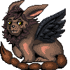
For swamptroggle
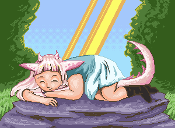For leafiske
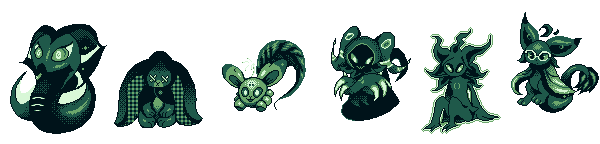For spectraltenkai
Log entry #6
17th July 2024
I expanded the about page a little bit. I think I want to make the webpage a little bit more personal. Not to the point of making shrines and such - while I like exploring them, personally I don't think I'm the sort of person to enjoy working on that :P but I want my website to be a bit more connected to the small web. I will work on a link section next time. Looks like my unemployment journey is soon to be over so who knows when that time will come.
Log entry #5
21st June 2024
I fixed the size of the website button because it was too big for some reason? XD not sure what I was thinking when I made it.
Adding some pixel art to the gallery!
This one was for the now closed Nokia Art Jam that I accidentally stumbled upon few months ago. It's great to see some love for the old nokia style in the wild, I am very happy someone hosted it.
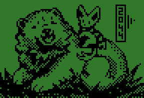Other little things:
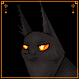
Experimenting with something for RPG maker.
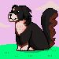My friend's dog!
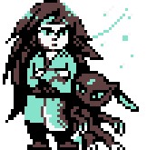Retro styled me as a Pokemon trainer, done when I was playing Legends Arceus.
Log entry #4
18th June 2024
Haven't been around for a while. It's weird how easy it is to fall back into the "modern" web, so to say. It kills a lot of motivations for little projects like this one. And it's not even like I don't have time, since I'm unemployed again :P I dunno. Hopefully I will feel a bit better and I will be more around soon. Neocities feel more cozy than any social media I've been on.
I have a lot of plans for the website actually, but I've added a small rambling about pixels for now. I will probably add some new pixel art soon. The rest, who knows?
Log entry #3
23th September 2023
Added an article about tools I use and made that whole article area look a bit better. And made this log entry place into a scroll. I was so confused as to why I couldn't get it to work but apparently Firefox is just like that.
Log entry #2
9th September 2023
Did some cleaning up in the menu, made my own space for rambles a while ago that I wanna use more often. Everything here looks very rough but I will consider it part of the charm.
Log entry #1
11th January 2023
I've created this website.
It's a small website. As it contains mostly my art for now, feel free to browse around, it shouldn't take long to check everything out! If you can leave a trace in a Guestbook, that would be great. Cheers.
About me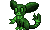
I'm Ren, also known as Zawieja. I'm 26 years old, I'm from Poland, and I love old web and all things retro! The fascination with pixel art started with the idea for a surreal game stylised for a nokia phone. It seemed like too good of an idea to pass by. Hopefully I can learn to properly make it at some point - sure, I can draw in many different styles, but making games is hard!
I also like cats a lot. Can you tell?
I'm interested in many things. I wanted to be a graphic designer, illustrator, 2D animator, UX/UI designer, a writer, an ornithologist, a microbiologist... Ultimately, I am just myself, with random knowledge in many different subjects.
My biggest interests (or obsessions) currently include:
- Slavic and finnish mythology; also pre-Indoeuropean culture
- Cats; especially cat breeds
- Birds
- Warrior Cats (infected my brain when I was 10 years old and never went away)
- Persona 2 (for some reason? probably a temporary interest :P)
- Video games: Night in The Woods, Undertale, Hollow Knight, Pokemon, Persona Series, Earthbound, Chrono Trigger are my favourites
- Anime: Natsume Yuujinchou, Mo Dao Zu Shi, Slayers, Digimon, One Piece, Akatsuki no Yona, Ghibli stuff, Revolutionary Girl Utena, Yu Yu Hakusho
- Cartoons: The Owl House, Gravity Falls, Over the Garden Wall
- Books: Lord of The Rings, Ranger's Apprentice, Chronicles of Ancient Darkness


Stamps and such


2044
Somehow I ended up working on a game this website was initially inspired about... In RPG Maker. And in a completely different artstyle.
Few things were at factor:
- I used to love RPG Maker as a kid and I would love to tackle it more seriously now that I'm an adult,
- Learning how to make games in other engines is time-consuming and not very enjoyable for me,
- I can make it so much faster since I know RPG Maker well enough,
- Not going for pixel art is actually much faster and more comfortable for me since I can make things very sketchy and they still look Cool™
I currently have some basic first maps, so it's not much to look at, but I've also successfully created most of the mechanics for the puzzles I want... I think.
It will be vaguely inspired by the Lost Vikings-esque games, where you will be able to switch between Sasha and Kurku who have different skills that can help you move forward.
Onto making some playable progress, hopefully.
Pixel art
I make pixel art for fun sometimes.
Nokia style game graphics
This was a small project made with the intetion of creating a surreal nokia-styled surreal platformer game that I previously called Book of Waste, Goner, Colorful... A game where you are a cat in an abandoned city, dreaming of seeing the world in color.
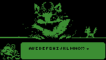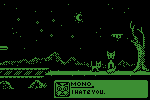
A lot of this project concept drawings centered around figuring out how to fit as much as possible into a small screen with big color limitations.
 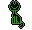 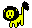
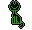 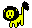 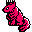
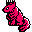
 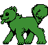
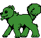 
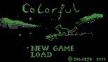 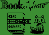
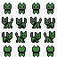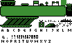
Other art
OCs
Gifts, art trades, and such!
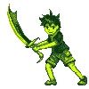 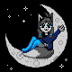
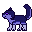
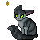 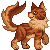
Fan Art and other stuff
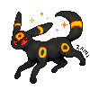
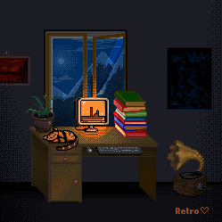
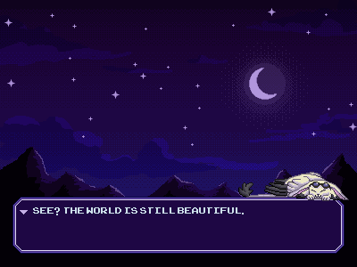
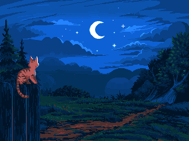

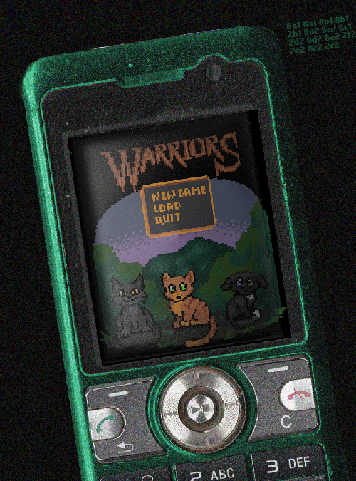